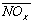
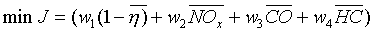
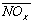
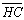

= weights, i=1,2,3,4
= weights, i=1,2,3,4= Normalized efficiency
 = Normalized NOX emissions
This control strategy was developed by Ohio State University under a subcontract with NREL. Information for this help file was taken from the final technical report entitled “Development of Fuzzy Logic and Neural Network Control and Advanced Emissions Modeling for Parallel Hybrid Vehicle” which provides additional detail on the model and is available in the ADVISOR reading room. The fuzzy emissions control strategy involves calculating the torque produced by the IC Engine based on various parameters such as road-load and battery SOC. This includes the calculation of an optimal torque based on contending IC Engine parameters such as fuel use and emissions, and deciding the actual torque output by later modifying the optimal torque based on road load and battery SOC. The control strategy is made scalable, and can be used with any parallel HEV model in ADVISOR. The controller programs are created using MATLAB script files, and can be modified by the user. The following Figure 1 indicates the position of the Fuzzy Logic Controller in the Simulink block in ADVISOR.
Figure 1. Base block diagram with fuzzy controller
The structure of the Fuzzy Controller is shown below in Figure 2 .
Figure 2 : Fuzzy Controller block components
The data for an IC Engine in ADVISOR is in the form of a 2-dimensional map, indexed by torque and speed. Information regarding fuel economy (g/s) and emissions such as CO, HC and NOX (g/s) is available for various speeds and torques. Shown below as a sample are the fuel use and emissions data for a 1.9L Turbo Diesel Engine available in ADVISOR.
MATLAB Handle Graphics
Figure 3: IC Engine emissions – a general trend
As seen in the above figure, we can determine the parameters at all torques for any given speed, up to the maximum torque point.
The process of finding an optimal point is shown in Figure 4 below.
Figure 4 : Finding an optimal IC Engine operating point
The four competing parameters in the determination of an optimum are fuel efficiency, NOX, CO and HC emissions. At any particular point in time, the simulation determines a speed of rotation for the IC Engine (based on the powertrain configuration and the current gear ratio). This is the speed at which the “instantaneous” optimization is performed. For the current speed, all possible torques that the IC Engine can provide are considered. The four competing parameters for all torques at the current speed are taken from the data maps.
 ( 1 )
where J = cost function
= weights, i=1,2,3,4
= Normalized efficiency
 = Normalized NOX emissions
= Normalized CO emissions
 = Normalized HC emissions
Here, the values are normalized with respect to the maximum for that particular speed. Relative weights are assigned to each parameter based on their importance. This is one large degree of freedom, and the weights must be selected for each IC engine based on their individual data maps. For our example in the report, we use the following default weights.
|
Parameter |
Weight |
|
Efficiency |
0.7 |
|
NOX |
0.3 |
|
CO |
0.1 |
|
HC |
0.1 |
Table 1 : Default weights in the control strategy
The above weights provide an optimum based heavily on efficiency and NOX, while CO and HC are also considered. These weights can be varied during the operation of the vehicle, based on certain vehicle parameters.
The Fuzzy Emissions control strategy contains the following files and variables.
|
File name |
Function |
|
fuzzy_emissions_in.m |
Input file in ADVISOR 3.2 which contains the emissions control strategy vehicle configuration to be loaded with the GUI. |
|
bd_fuzzy_emissions.mdl |
The main block diagram that is used when the new fuzzy logic controller (ptc_fuzzy_emissions.m) is selected from the GUI interface |
|
fuzzy_target_compute_emissions.m |
Calculate the optimal torque for a given IC Engine speed, based on a set of weights. Also varies the weights based on vehicle parameters. |
|
ptc_fuzzy_emissions.m |
This file contains the powertrain control variables, including the battery SOC limits. When selected, uses the file bd_fuzzy_emissions.mdl to simulate the vehicle. |
|
mfuzzy_emissions.m |
The main Fuzzy Logic Controller which takes in the optimal torque and SOC as inputs and gives the actual torque as the output. This is used to shift the calculated optimal torque point based on the driver’s request and the Battery SOC. Care is taken to control the deviation to a minimum, since a large correction from optimal destroys the purpose of optimization. The rule-base can be modified by the user if desired. |
|
Block_diagram_name.m |
Modifications are made to this file so as to enable the respective fuzzy logic Simulink blocks to be used, when the fuzzy powertrain controller is selected. |
Table 2 : Files added in ADVISOR 3.2 – Emissions control